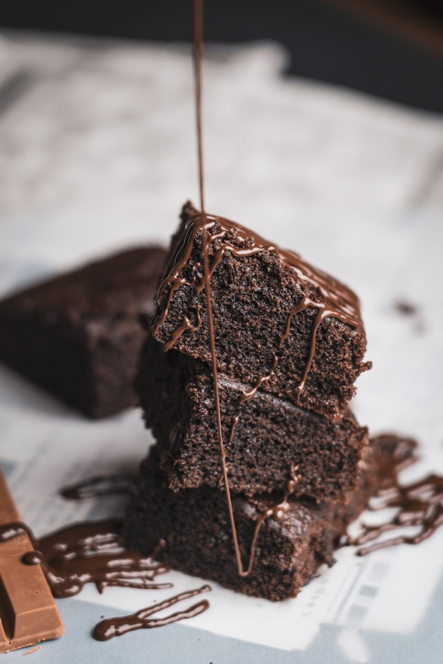

Food and Yemek
Anasayfa
Tarifler
İletişim
Hakkımızda
Sezar Salata
Malzemeler
- 1 adet romaine marul veya yeşil marul
- 1 su bardağı küp şeklinde doğranmış ekmek içi (kruton)
- 1/2 su bardağı rendelenmiş Parmesan peyniri
- İsteğe bağlı olarak, üzerine dilimlenmiş tavuk göğsü veya karides eklenebilir
Sezar Sosu İçin
- 2 diş sarımsak, ezilmiş
- 2 adet havyar (anchovy) filetosu (isteğe bağlı)
- 1/4 su bardağı mayonez
- 2 yemek kaşığı zeytinyağ
- 1 yemek kaşığı limon suyu
- 1 tatlı kaşığı Dijon hardalı
- Tuz ve karabiber
Yapılışı
- Marulu iyice yıkayın ve kurulayın. Büyük bir salata kasesine doğrayın.
- Bir tavada, ekmek içlerini altın rengi olana kadar kızartın. Kızarmış ekmek içlerini salata kasesine ekleyin.
- Sezar sosunu hazırlamak için bir kasede ezilmiş sarımsak, havyar filetosu (varsa), mayonez, zeytinyağı, limon suyu ve Dijon hardalını karıştırın. Tuz ve karabiber ile tatlandırın.
- Hazırladığınız Sezar sosunu salata kasesine ekleyin ve iyice karıştırın, böylece tüm malzemeler sosla kaplanmış olur.
- Üzerine rendelenmiş Parmesan peynirini serpin.
- İsteğe bağlı olarak, dilimlenmiş tavuk göğsü veya karides ekleyin.
- Sezar salatanızı dilimlenmiş limon dilimleri ile süsleyerek servis yapın.

Afiyet Olsun
Kek Tarifi
Malzemeler
- 3 adet büyük boy yumurta
- 1 su bardağı toz şeker
- 1 su bardağı süt
- 2 su bardağı un
- 1 yemek kaşığı kakao tozu
- 1 paket kabartma tozu
- 1 paket vanilya özütü veya 1 tatlı kaşığı vanilya özü
- Bir tutam tuz
Yapılışı
- Fırını önceden 180 dereceye ayarlayın ve kek kalıbını yağlayın veya yağlı kağıt ile kaplayın.
- Yumurtaları büyük bir karıştırma kabına kırın ve üzerine toz şekeri ekleyin.
- Sıvı yağı ve sütü yumurta ve şeker karışımına ekleyin, ardından iyice karıştırın.
- Unu, kakao tozunu (varsa), kabartma tozunu ve vanilyayı eleyerek karışıma ekleyin.
- Hazırladığınız kek hamurunu yağlanmış veya yağlı kağıtla kaplanmış kek kalıbına dökün.
- Önceden ısıtılmış fırında, kek kürdanına batırdığınızda temiz çıkana kadar yaklaşık 30-35 dakika pişirin.
- Kekinizi fırından çıkarın ve biraz soğumasını bekledikten sonra dilimleyerek servis yapın.

Afiyet Olsun